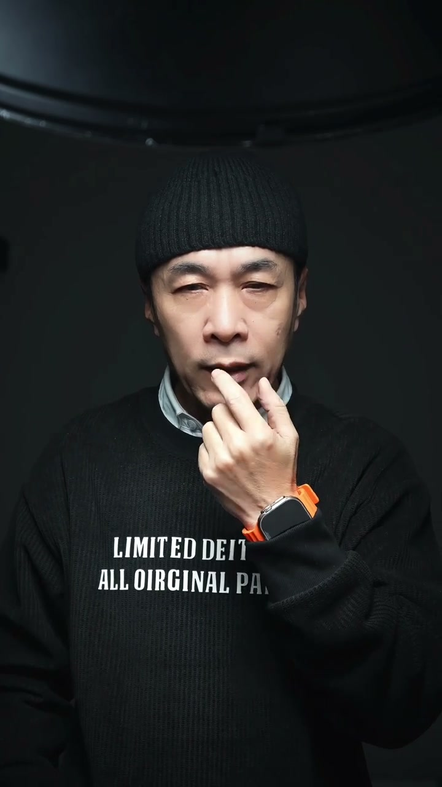
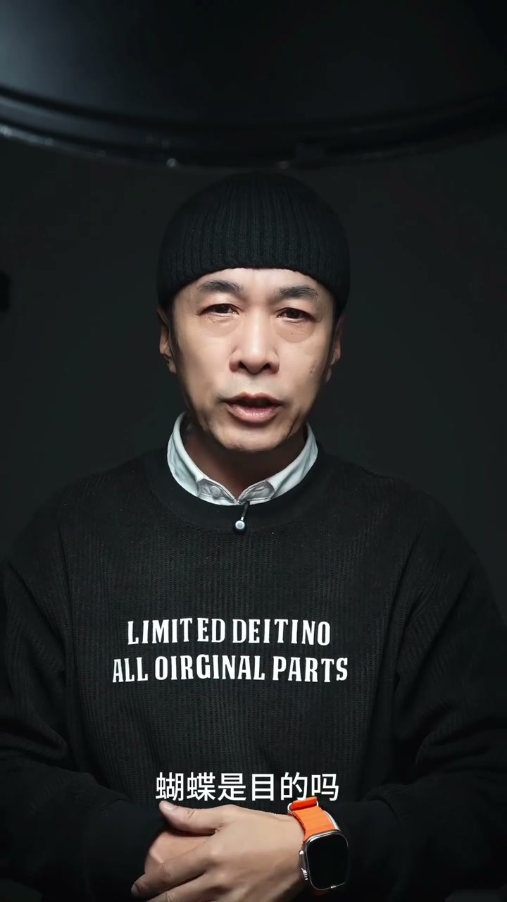
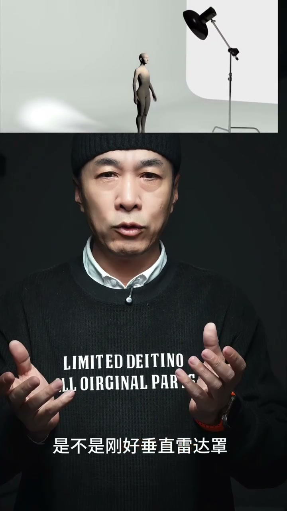
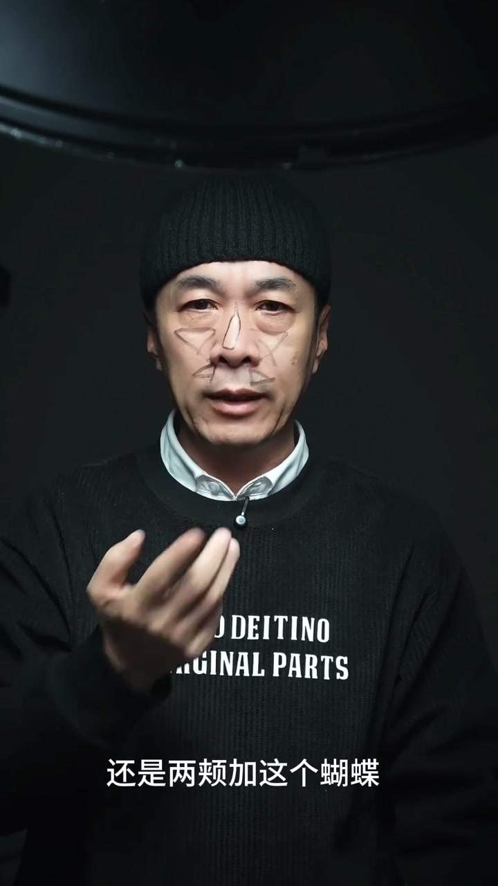

01
中文
来跟大家揭穿一个骗了99%摄影师的骗局。
EN
Let me expose a myth that has fooled 99% of photographers.
表达提示Challenge the common belief.

Scene English · 摄影 · 布光原理
The Butterfly Light That Fooled Photographers for a Century
🎧 语音讲解
Opening: Let me expose a myth that has foo…
情境博主质疑把鼻子下方的蝴蝶形阴影当作蝴蝶光的刻板认知。
来跟大家揭穿一个骗了99%摄影师的骗局。
Let me expose a myth that has fooled 99% of photographers.
表达提示Challenge the common belief.
鼻子下面有蝴蝶叫蝴蝶光，你看见鼻子下的蝴蝶了吗？
People call it butterfly light when there's a butterfly under the nose—do you actually see one?
表达提示The 'butterfly' is the nose shadow.
Challenge the common belief.

The wrong logic: people look only for a br…
情境学习布光不应只找结果特征，而应理解光的动机。
一说伦勃朗光，你非得在脸颊上找亮区。
Mention Rembrandt light and you insist on finding a bright patch on the cheek.
表达提示Stop looking for results only.
对摄影的光影，你理解得太到位了。
You sure have a deep understanding of photographic lighting.
表达提示Sarcasm: it's actually shallow.
Stop looking for results only.
The real origin: it comes from 1920s Holly…
情境蝴蝶光也叫派拉蒙光，因派拉蒙影业而闻名。
蝴蝶光又叫派拉蒙光，上世纪20年代好莱坞有一家电影公司叫派拉蒙。
Butterfly light is also called Paramount light—1920s Hollywood had a studio called Paramount.
表达提示Know the real origin.
他们用这种布光形式来拍明星照，用于电影海报。
They used this lighting for star portraits and movie posters.
表达提示Hollywood's golden-era look.
格蕾塔·嘉宝、玛丽·莲梦露、奥黛丽·赫本，谁没拍过派拉蒙光。
Greta Garbo, Marilyn Monroe, Audrey Hepburn—who hasn't shot in Paramount light?
表达提示Legends all shot this way.
Know the real origin.

Learn the motive: creating a triangle high…
情境布光的目的是表现立体感，而不是制造某个形状。
我们学布光，本末倒置，找三角形亮光也好，找鼻子下面蝴蝶也好，都是在找结果。
When we learn lighting backward, whether finding the triangle highlight or the nose butterfly, we're only chasing results.
表达提示Don't chase results, chase intent.
做任何事情都有个目的，叫做动机。
Everything you do has a purpose—that's the motive.
表达提示Ask why, not what.
打三角形亮区是你的目的吗？显然不是。
Is creating a triangle highlight your goal? Clearly not.
表达提示The shape is a side effect.
Ask why, not what.

The correct setup: use a beauty dish, aim …
情境关键参数：雷达罩、鼻梁对准、额头高度、伸手距离。
蝴蝶光的打法是用雷达罩，光的中心轴对准鼻梁。
For butterfly light, use a beauty dish and aim the center of light at the bridge of the nose.
表达提示Beauty dish is the tool.
平齐额头的高度，光的位置大概伸手的摸着。
Level with the forehead, positioned about an arm's reach away.
表达提示Remember this key point.
Beauty dish is the tool.
Remember this key point.

The beauty dish feature: a center reflecto…
情境正因为中心光被挡，光线向鼻梁两边暗下去，形成立体感。
雷达罩中间有一块反射板，挡住中心亮区。
A beauty dish has a center reflector that blocks the bright core.
表达提示The dish's key design.
形成了一个像日全食一样的亮环，边缘慢慢的衰减下去。
It forms a ring like a total solar eclipse, with edges fading gradually.
表达提示Soft, even falloff.
The dish's key design.
Soft, even falloff.

Why the butterfly appears: the muscle unde…
情境蝴蝶是面部结构在特定光位下的自然结果。
你觉得这块肌肉是垂直地面长，还是跟鼻梁一样微微的朝上长？
Is this muscle vertical to the ground, or does it tilt slightly upward like the bridge of the nose?
表达提示Feel it with your fingers.
是不是刚好垂直雷达照？整张脸受光最多的就是这里。
Isn't it directly facing the dish? This is where the face receives the most light.
表达提示The brightest zones form the butterfly.
这块肌肉叫口轮匝肌，是一个圆环状的肌肉。
This muscle is the orbicularis oris, a ring-shaped muscle.
表达提示Anatomy shapes the light pattern.
Feel it with your fingers.

The real purpose: just like makeup—darkeni…
情境拍蝴蝶光是为了立体感，不是为了拍出蝴蝶。
你们化妆的时候是不是在这里画高光？在鼻梁两侧和颧骨以外压暗的粉底。
When you do makeup, don't you highlight here, and use darker foundation beside the nose and outside the cheekbones?
表达提示Makeup teaches lighting.
蝴蝶光的目的就是拍出立体感，而不是为了拍出蝴蝶。
The purpose of butterfly light is dimension, not a butterfly shape.
表达提示The butterfly is a byproduct.
Makeup teaches lighting.

Busting the myth that Asian faces don't su…
情境用现实检验证明：强行找蝴蝶反而失去美感。
有一种说法，说亚洲人的五官长得不够立体，不适合拍蝴蝶光。
Some say Asian features aren't defined enough for butterfly light.
表达提示The myth to be busted.
有了蝴蝶吧，但是你有没有看见整张脸像一个倒三角形的骷髅脸，完全没有了美感。
Now there's a butterfly, but don't you see the whole face like an inverted-triangle skull, with no beauty at all?
表达提示Forcing it ruins the portrait.
他们的逻辑还是在找蝴蝶，没有蝴蝶就不是蝴蝶光。
Their logic still hunts for the butterfly—no butterfly, no butterfly light.
表达提示That's the fundamental mistake.
The myth to be busted.
说蝴蝶光的别名
说正确打法
说蝴蝶的来源
说真正目的
找结果不如找动机，蝴蝶只是副产品。
强行找蝴蝶会让脸变成骷髅脸，正确参数是额头高、一臂距。
亚洲人不适合蝴蝶光是对「找蝴蝶」逻辑的误读。
判断标准是立体感而不是某个形状。